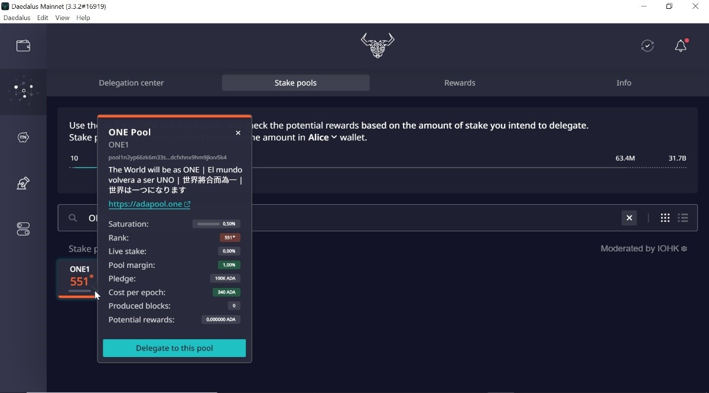
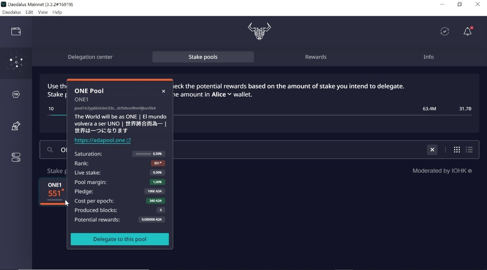

Como Delegar a [ONE1]
Índice de Contenidos
> 1. Comprar ADA
> 2. Crear Una Billetera de Cardano
> 3. El Procedimiento Para Delegar Usando la Billetera Daedalus o Yoroi
> 4. Empiece a Ganar Recompensas
1. Comprar ADA
En primer lugar, debes comprar no menos de 10 ADA en un Exchange (casa de cambio) para poder delegar, te recomendamos Binance (https://www.binance.com/es), ya que es el Exchange más reconocido del mundo. Una vez que usted se registró en Binance y compró sus ADA, puede comenzar a delegar creando una billetera de Cardano.
2. Crear Una Billetera de Cardano
Puede stakear su ADA y ganar RECOMPENSAS usando la billetera Daedalus o Yoroi. Hemos preparado una guía de paso por paso sobre cómo puede stakear fácilmente su ADA en unos minutos. Simplemente siga la guía y comience a ganar recompensas por su ADA stakeada.
3. El Procedimiento Para Delegar Usando la Billetera Daedalus o Yoroi
Ir a:
A. Daedalus - billetera que se instala en el notebook o computadora, usted debe descargar el blockchain completo en su computador
Descargar Billetera Daedalus


Crear una billetera con un nombre y configure una clave (guardela en un lugar seguro, ya que la necesitara cada vez que quiera efectuar una transaccion)

Hay una lista de 24 palabras que debes escribir en un papel y guardar en un lugar seguro. Esta lista de palabras es la frase de recuperación de billetera y es la única forma de recuperar su billetera si su computadora se pierde, se rompe, es robada o deja de funcionar


Luego confirmar

Si tienes tus ADA en Binance, deberás retirar tus ADA desde Binance y pasarlas a tu billetera local en tu computadora, para ello, copia una dirección de recepción (Receive) de la lista de direcciones (la que prefieras de la lista) y seleccionala como billetera de destino en la extraccion (withdrawal) que hagas en Binance.

Despúes de haber recibido los ADAs en la Deadalus, podes empezar a delegar!

Ir al centro de delegación y empezar a delegar , hacer click en “DELEGATE”


Elegir la billetera que quieres delegar

Despúes elegir el stake pool ONE1
Ticker: ONE1Nombre del pool: ONE Pool
Pool ID:
 



Luego debes confirmar tu delegación ingresando tu clave (la que configuraste al crear tu wallet)


Finalmente, vas a ver la confirmación de que has delegado exitosamente tus ADAs a ONE1 pool

B. Yoroi – Billetera liviana que es un complemento del navegador

Descargar Yoroi wallet
Publicación en el foro: Cardano Shelley: Como delegar desde la billetera de YOROI
Puede usar la billetera YOROI para la delegación de ADA a un Pool . Solo es posible desde la billetera Shelley. Si tienes en la vieja billetera Byron, tendrá que transferir tus ADAs de la billetera Byron a la billetera Shelley. luego puedes delegar tus ADA a un Pool. Una vez que creaste la billetera Shelley, ya puedes comenzar a delegar a nuestro pool.
Primero debe ir a Delegación e inserter nuestro pool ID
Nombre del Pool: ONE Pool [ONE1]
Pool ID:

Cuando haya insertado la ID del nuestro pool , haga clic en el botón Siguiente. Verá un cuadro de diálogo de confirmación. La billetera le mostrará los detalles del Pool . Debe proporcionar una contraseña para pagar el fee y luego haga clic en el botón Delegar.
Luego vas a ver la confirmación que has delegado exitosamente tus ADAs a ONE pool.
Podes chequear el dashboard para ver los detalles relacionadas con la delegación.
4. Empiece a Ganar Recompensas
Una vez que haya comenzado a delegar su Cardano para stakear, la tasa de retorno promedio estará entre el 5% y el 6% APY durante el año.